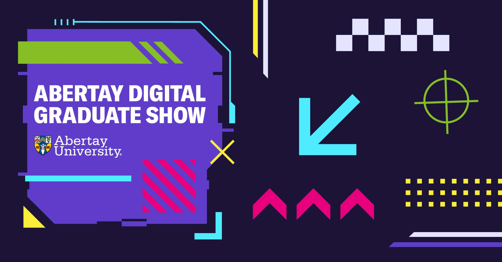
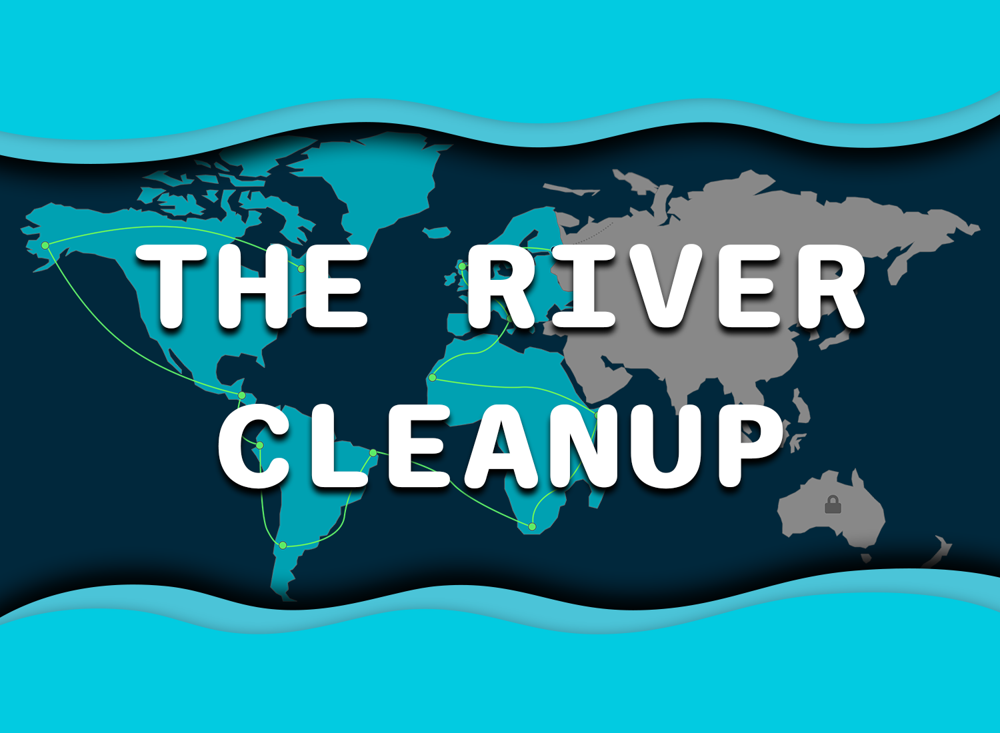

The River Clean-up
Project Aim
This research project focuses on the development of a user experience (UX) and user interface (UI) educational experience aimed at raising awareness for river clean-up and environmental education among young people in education (ages 11-16).
Research Questions
- How can the User Experience/User Interface be improved for younger audiences?
- How can the User Experiences/User Interface aid in effective education?
- Explore User Experience/User Interface Design for young people in education.
- How can Environmental theming be implemented into a User Interface?
- What makes a good User Experience/User Interface?
Aims and Objectives
- Literature Review - Undertake UX/UI research to help inform me of good/bad UX/UI design. Identify what the current trends are and how to onboard, balance cognitive load and how to keep users motivated/engaged to achieve their goals.
- Game Analysis - Undertake game analysis to develop an understanding of pre-existing game/apps user flows and user interfaces.
- Practical Development - Based on research develop low-fidelity Adobe XD wireframes, high-fidelity Adobe XD wireframes and implement into unity engine. Using the iterative design process to conceptualize, prototype, test and evaluate my project.
- Post-Mortem - Conduct a post-mortem on all aspects of the project work covering the above objectives.
Abertay Digital Graduate Show
Along with my project page, I was also selected for the showcase page for the graduate show!
Gamfication
Through my analysis, I found several commonalities across the personas, which led me to break down the gamification principles of Mastery, Autonomy, and Purpose for easier understanding and application in my project. These principles align with the desire to master a topic, feel a sense of autonomy and control, and contribute to something larger than oneself through constructivist learning.
Learning Theory
Constructivist Learning

The above figure showcases a user flow chart designed for rote learning. This flow’s goal is to introduce the player to a new pollution type each individual lesson for a total of 3 lessons. At the end of each lesson the user then takes a quiz to gauge how much of the information they have processed. This structure of learning means each lesson has more information for the end user to consume and memorise before taking the quiz.

Under the constructivist learning framework, each lesson would be a mini game, where the user gets to interact and learn. These lessons can range from simple activities like sorting recyclables to more advanced gameplay, such as identifying types of pollution by testing a virtual river with real-world technologies. This approach promotes active thinking and problem-solving, allowing users to actively engage with the content.
The above video showcases the early development stage of the constructivist learning theory prototype within Figma.
Rote Learning

Rote learning offers benefits such as the ability to quickly learn facts and statistics through memorization and repetition. In the context of this project, rote learning could have been implemented through quizzes that test the user's knowledge of facts and statistics.
The above video showcases a prototype of the Rote learning theory, this form of UX/UI was not taken on any further due to the Constructivist learning theory being favoured for this project.
Adobe XD
The above video showcases the High Fidelity Adobe XD Constructivist Flow.
Unity Implementation
To finalise my project, I implemented the User Interface into Unity Engine using their new UI Builder system.
Click the above image to view the itch.io webpage for this project. This page also includes a download for the unity engine implementation.